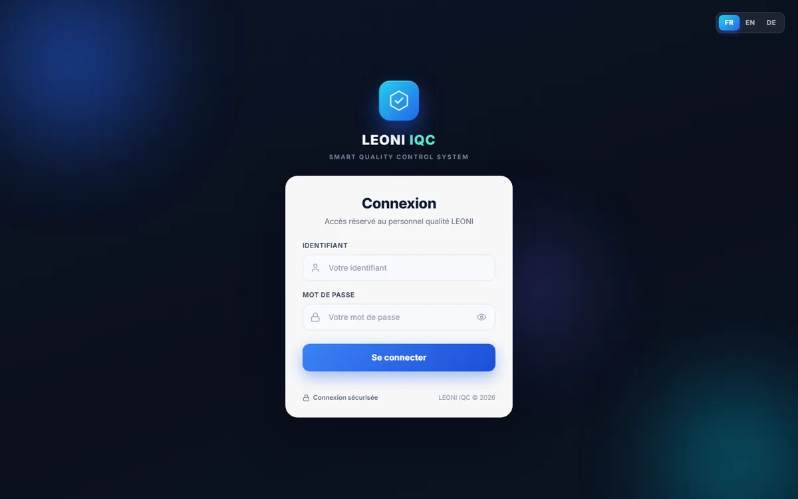

Du capteur à l’application web : systèmes embarqués, IoT, IA, développement web et DevOps.

Projet phare · LEONI Wiring Systems Tunisia
Digitalisation du processus d’inspection à réception (IQC)
Application web de contrôle qualité à réception pour le service Qualité / Incoming Quality Control :
informations de réception et références articles, échantillonnage, contrôles dimensionnels et rapports d’inspection.
Une aide à l’inspection visuelle propose un verdict que l’inspecteur valide.